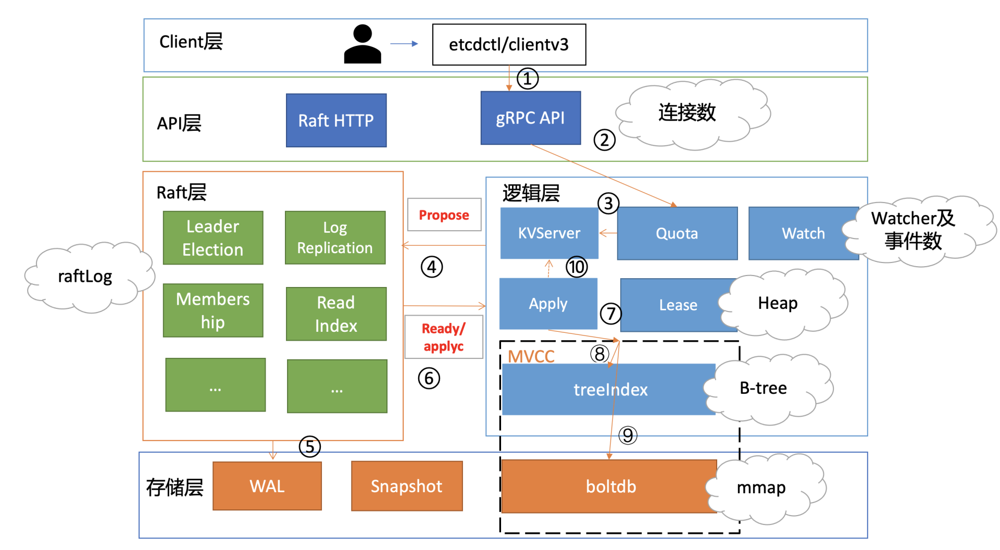
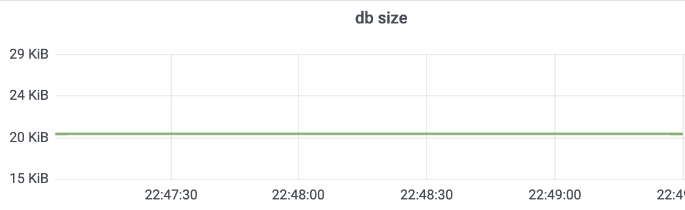
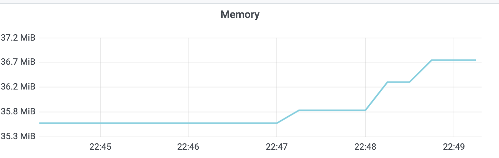
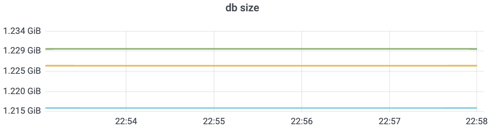
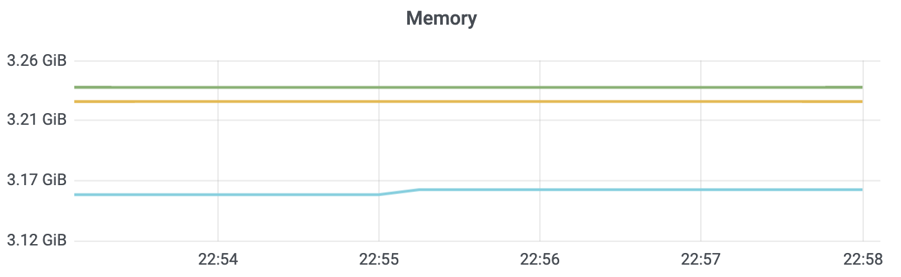
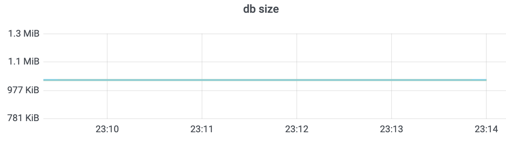
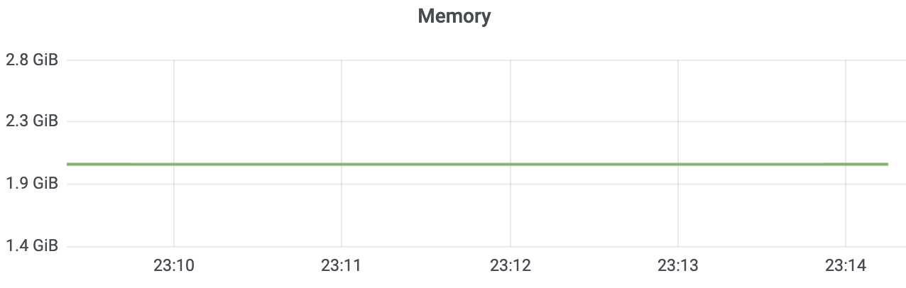
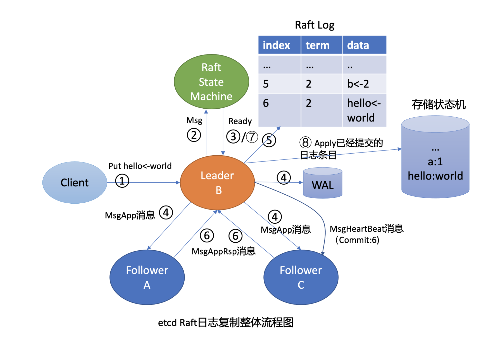
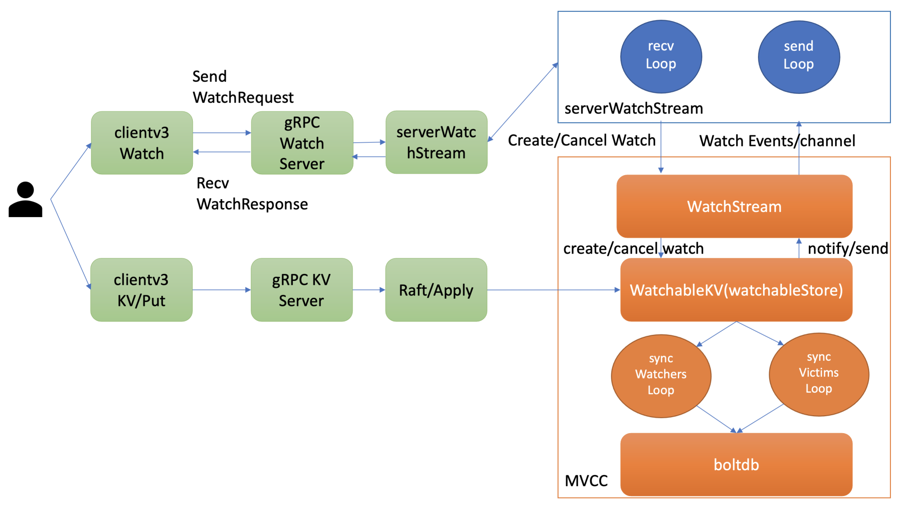
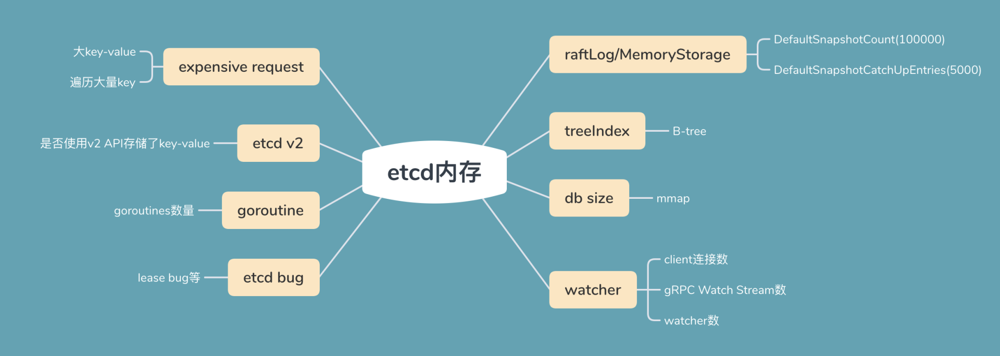

- 00 开篇词 为什么你要学习etcd_.md.html
- 01 etcd的前世今生：为什么Kubernetes使用etcd？.md.html
- 02 基础架构：etcd一个读请求是如何执行的？.md.html
- 03 基础架构：etcd一个写请求是如何执行的？.md.html
- 04 Raft协议：etcd如何实现高可用、数据强一致的？.md.html
- 05 鉴权：如何保护你的数据安全？.md.html
- 06 租约：如何检测你的客户端存活？.md.html
- 07 MVCC：如何实现多版本并发控制？.md.html
- 08 Watch：如何高效获取数据变化通知？.md.html
- 09 事务：如何安全地实现多key操作？.md.html
- 10 boltdb：如何持久化存储你的key-value数据？.md.html
- 11 压缩：如何回收旧版本数据？.md.html
- 12 一致性：为什么基于Raft实现的etcd还会出现数据不一致？.md.html
- 13 db大小：为什么etcd社区建议db大小不超过8G？.md.html
- 14 延时：为什么你的etcd请求会出现超时？.md.html
- 15 内存：为什么你的etcd内存占用那么高？.md.html
- 16 性能及稳定性（上）：如何优化及扩展etcd性能？.md.html
- 17 性能及稳定性（下）：如何优化及扩展etcd性能_.md.html
- 18 实战：如何基于Raft从0到1构建一个支持多存储引擎分布式KV服务？.md.html
- 19 Kubernetes基础应用：创建一个Pod背后etcd发生了什么？.md.html
- 20 Kubernetes高级应用：如何优化业务场景使etcd能支撑上万节点集群？.md.html
- 21 分布式锁：为什么基于etcd实现分布式锁比Redis锁更安全？.md.html
- 22 配置及服务发现：解析etcd在API Gateway开源项目中应用.md.html
- 23 选型：etcd_ZooKeeper_Consul等我们该如何选择？.md.html
- 24 运维：如何构建高可靠的etcd集群运维体系？.md.html
- 特别放送 成员变更：为什么集群看起来正常，移除节点却会失败呢？.md.html
- 结束语 搞懂etcd，掌握通往分布式存储系统之门的钥匙.md.html
- 捐赠
15 内存：为什么你的etcd内存占用那么高？
你好，我是唐聪。
在使用etcd的过程中，你是否被异常内存占用等现象困扰过？比如etcd中只保存了1个1MB的key-value，但是经过若干次修改后，最终etcd内存可能达到数G。它是由什么原因导致的？如何分析呢？
这就是我今天要和你分享的主题：etcd的内存。 希望通过这节课，帮助你掌握etcd内存抖动、异常背后的常见原因和分析方法，当你遇到类似问题时，能独立定位、解决。同时，帮助你在实际业务场景中，为集群节点配置充足的内存资源，遵循最佳实践，尽量减少expensive request，避免etcd内存出现突增，导致OOM。
分析整体思路
当你遇到etcd内存占用较高的案例时，你脑海中第一反应是什么呢？
也许你会立刻重启etcd进程，尝试将内存降低到合理水平，避免线上服务出问题。
也许你会开启etcd debug模式，重启etcd进程等复现，然后采集heap profile分析内存占用。
以上措施都有其合理性。但作为团队内etcd高手的你，在集群稳定性还不影响业务的前提下，能否先通过内存异常的现场，结合etcd的读写流程、各核心模块中可能会使用较多内存的关键数据结构，推测出内存异常的可能原因？
全方位的分析内存异常现场，可以帮助我们节省大量复现和定位时间，也是你专业性的体现。
下图是我以etcd写请求流程为例，给你总结的可能导致etcd内存占用较高的核心模块与其数据结构。

从图中你可以看到，当etcd收到一个写请求后，gRPC Server会和你建立连接。连接数越多，会导致etcd进程的fd、goroutine等资源上涨，因此会使用越来越多的内存。
其次，基于我们04介绍的Raft知识背景，它需要将此请求的日志条目保存在raftLog里面。etcd raftLog后端实现是内存存储，核心就是数组。因此raftLog使用的内存与其保存的日志条目成正比，它也是内存分析过程中最容易被忽视的一个数据结构。
然后当此日志条目被集群多数节点确认后，在应用到状态机的过程中，会在内存treeIndex模块的B-tree中创建、更新key与版本号信息。 在这过程中treeIndex模块的B-tree使用的内存与key、历史版本号数量成正比。
更新完treeIndex模块的索引信息后，etcd将key-value数据持久化存储到boltdb。boltdb使用了mmap技术，将db文件映射到操作系统内存中。因此在未触发操作系统将db对应的内存page换出的情况下，etcd的db文件越大，使用的内存也就越大。
同时，在这个过程中还有两个注意事项。
一方面，其他client可能会创建若干watcher、监听这个写请求涉及的key， etcd也需要使用一定的内存维护watcher、推送key变化监听的事件。
另一方面，如果这个写请求的key还关联了Lease，Lease模块会在内存中使用数据结构Heap来快速淘汰过期的Lease，因此Heap也是一个占用一定内存的数据结构。
最后，不仅仅是写请求流程会占用内存，读请求本身也会导致内存上升。尤其是expensive request，当产生大包查询时，MVCC模块需要使用内存保存查询的结果，很容易导致内存突增。
基于以上读写流程图对核心数据结构使用内存的分析，我们定位问题时就有线索、方法可循了。那如何确定是哪个模块、场景导致的内存异常呢？
接下来我就通过一个实际案例，和你深入介绍下内存异常的分析方法。
一个key使用数G内存的案例
我们通过goreman启动一个3节点etcd集群(linux/etcd v3.4.9)，db quota为6G，执行如下的命令并观察etcd内存占用情况：
- 执行1000次的put同一个key操作，value为1MB；
- 更新完后并进行compact、defrag操作；
# put同一个key，执行1000次
for i in {1..1000}; do dd if=/dev/urandom bs=1024
count=1024 | ETCDCTL_API=3 etcdctl put key || break; done
# 获取最新revision，并压缩
etcdctl compact `(etcdctl endpoint status --write-out="json" | egrep -o '"revision":[0-9]*' | egrep -o '[0-9].*')`
# 对集群所有节点进行碎片整理
etcdctl defrag --cluster
在执行操作前，空集群etcd db size 20KB，etcd进程内存36M左右，分别如下图所示。


你预测执行1000次同样key更新后，etcd进程占用了多少内存呢? 约37M？ 1G？ 2G？3G？ 还是其他呢？
执行1000次的put操作后，db大小和etcd内存占用分别如下图所示。


当我们执行compact、defrag命令后，如下图所示，db大小只有1M左右，但是你会发现etcd进程实际却仍占用了2G左右内存。- 

整个集群只有一个key，为什么etcd占用了这么多的内存呢？是etcd发生了内存泄露吗？
raftLog
当你发起一个put请求的时候，etcd需通过Raft模块将此请求同步到其他节点，详细流程你可结合下图再次了解下。

从图中你可以看到，Raft模块的输入是一个消息/Msg，输出统一为Ready结构。etcd会把此请求封装成一个消息，提交到Raft模块。
Raft模块收到此请求后，会把此消息追加到raftLog的unstable存储的entry内存数组中（图中流程2），并且将待持久化的此消息封装到Ready结构内，通过管道通知到etcdserver（图中流程3）。
etcdserver取出消息，持久化到WAL中，并追加到raftLog的内存存储storage的entry数组中（图中流程5）。
下面是raftLog的核心数据结构，它由storage、unstable、committed、applied等组成。storage存储已经持久化到WAL中的日志条目，unstable存储未持久化的条目和快照，一旦持久化会及时删除日志条目，因此不存在过多内存占用的问题。
type raftLog struct {
// storage contains all stable entries since the last snapshot.
storage Storage
// unstable contains all unstable entries and snapshot.
// they will be saved into storage.
unstable unstable
// committed is the highest log position that is known to be in
// stable storage on a quorum of nodes.
committed uint64
// applied is the highest log position that the application has
// been instructed to apply to its state machine.
// Invariant: applied <= committed
applied uint64
}
从上面raftLog结构体中，你可以看到，存储稳定的日志条目的storage类型是Storage，Storage定义了存储Raft日志条目的核心API接口，业务应用层可根据实际场景进行定制化实现。etcd使用的是Raft算法库本身提供的MemoryStorage，其定义如下，核心是使用了一个数组来存储已经持久化后的日志条目。
// MemoryStorage implements the Storage interface backed
// by an in-memory array.
type MemoryStorage struct {
// Protects access to all fields. Most methods of MemoryStorage are
// run on the raft goroutine， but Append() is run on an application
// goroutine.
sync.Mutex
hardState pb.HardState
snapshot pb.Snapshot
// ents[i] has raftLog position i+snapshot.Metadata.Index
ents []pb.Entry
}
那么随着写请求增多，内存中保留的Raft日志条目会越来越多，如何防止etcd出现OOM呢？
etcd提供了快照和压缩功能来解决这个问题。
首先你可以通过调整–snapshot-count参数来控制生成快照的频率，其值默认是100000（etcd v3.4.9，早期etcd版本是10000），也就是每10万个写请求触发一次快照生成操作。
快照生成完之后，etcd会通过压缩来删除旧的日志条目。
那么是全部删除日志条目还是保留一小部分呢？
答案是保留一小部分Raft日志条目。数量由DefaultSnapshotCatchUpEntries参数控制，默认5000，目前不支持自定义配置。
保留一小部分日志条目其实是为了帮助慢的Follower以较低的开销向Leader获取Raft日志条目，以尽快追上Leader进度。若raftLog中不保留任何日志条目，就只能发送快照给慢的Follower，这开销就非常大了。
通过以上分析可知，如果你的请求key-value比较大，比如上面我们的案例中是1M，1000次修改，那么etcd raftLog至少会消耗1G的内存。这就是为什么内存随着写请求修改次数不断增长的原因。
除了raftLog占用内存外，MVCC模块的treeIndex/boltdb模块又是如何使用内存的呢？
treeIndex
一个put写请求的日志条目被集群多数节点确认提交后，这时etcdserver就会从Raft模块获取已提交的日志条目，应用到MVCC模块的treeIndex和boltdb。
我们知道treeIndex是基于google内存btree库实现的一个索引管理模块，在etcd中每个key都会在treeIndex中保存一个索引项(keyIndex)，记录你的key和版本号等信息，如下面的数据结构所示。
type keyIndex struct {
key []byte
modified revision // the main rev of the last modification
generations []generation
}
同时，你每次对key的修改、删除操作都会在key的索引项中追加一条修改记录(revision)。因此，随着修改次数的增加，etcd内存会一直增加。那么如何清理旧版本，防止过多的内存占用呢？
答案也是压缩。正如我在11压缩篇和你介绍的，当你执行compact命令时，etcd会遍历treeIndex中的各个keyIndex，清理历史版本号记录与已删除的key，释放内存。
从上面的keyIndex数据结构我们可知，一个key的索引项内存开销跟你的key大小、保存的历史版本数、compact策略有关。为了避免内存索引项占用过多的内存，key的长度不应过长，同时你需要配置好合理的压缩策略。
boltdb
在treeIndex模块中创建、更新完keyIndex数据结构后，你的key-value数据、各种版本号、lease等相关信息会保存到如下的一个mvccpb.keyValue结构体中。它是boltdb的value，key则是treeIndex中保存的版本号，然后通过boltdb的写接口保存到db文件中。
kv := mvccpb.KeyValue{
Key: key，
Value: value，
CreateRevision: c，
ModRevision: rev，
Version: ver，
Lease: int64(leaseID)，
}
前面我们在介绍boltdb时，提到过etcd在启动时会通过mmap机制，将etcd db文件映射到etcd进程地址空间，并设置mmap的MAP_POPULATE flag，它会告诉Linux内核预读文件，让Linux内核将文件内容拷贝到物理内存中。
在节点内存足够的情况下，后续读请求可直接从内存中获取。相比read系统调用，mmap少了一次从page cache拷贝到进程内存地址空间的操作，因此具备更好的性能。
若etcd节点内存不足，可能会导致db文件对应的内存页被换出。当读请求命中的页未在内存中时，就会产生缺页异常，导致读过程中产生磁盘IO。这样虽然避免了etcd进程OOM，但是此过程会产生较大的延时。
从以上boltdb的key-value和mmap机制介绍中我们可知，我们应控制boltdb文件大小，优化key-value大小，配置合理的压缩策略，回收旧版本，避免过多内存占用。
watcher
在你写入key的时候，其他client还可通过etcd的Watch监听机制，获取到key的变化事件。
那创建一个watcher耗费的内存跟哪些因素有关呢?
在08Watch机制设计与实现分析中，我和你介绍过创建watcher的整体流程与架构，如下图所示。当你创建一个watcher时，client与server建立连接后，会创建一个gRPC Watch Stream，随后通过这个gRPC Watch Stream发送创建watcher请求。
每个gRPC Watch Stream中etcd WatchServer会分配两个goroutine处理，一个是sendLoop，它负责Watch事件的推送。一个是recvLoop，负责接收client的创建、取消watcher请求消息。
同时对每个watcher来说，etcd的WatchableKV模块需将其保存到相应的内存管理数据结构中，实现可靠的Watch事件推送。

因此watch监听机制耗费的内存跟client连接数、gRPC Stream、watcher数(watching)有关，如下面公式所示：
- c1表示每个连接耗费的内存；
- c2表示每个gRPC Stream耗费的内存；
- c3表示每个watcher耗费的内存。
memory = c1 * number_of_conn + c2 *
avg_number_of_stream_per_conn + c3 *
avg_number_of_watch_stream
根据etcd社区的压测报告，大概估算出Watch机制中c1、c2、c3占用的内存分别如下：
- 每个client连接消耗大约17kb的内存(c1)；
- 每个gRPC Stream消耗大约18kb的内存(c2)；
- 每个watcher消耗大约350个字节(c3)；
当你的业务场景大量使用watcher的时候，应提前估算下内存容量大小，选择合适的内存配置节点。
注意以上估算并不包括watch事件堆积的开销。变更事件较多，服务端、客户端高负载，网络阻塞等情况都可能导致事件堆积。
在etcd 3.4.9版本中，每个watcher默认buffer是1024。buffer内保存watch响应结果，如watchID、watch事件（watch事件包含key、value）等。
若大量事件堆积，将产生较高昂的内存的开销。你可以通过etcd_debugging_mvcc_pending_events_total指标监控堆积的事件数，etcd_debugging_slow_watcher_total指标监控慢的watcher数，来及时发现异常。
expensive request
当你写入比较大的key-value后，如果client频繁查询它，也会产生高昂的内存开销。
假设我们写入了100个这样1M大小的key， 通过Range接口一次查询100个key， 那么boltdb遍历、反序列化过程将花费至少100MB的内存。如下面代码所示，它会遍历整个key-value，将key-value保存到数组kvs中。
kvs := make([]mvccpb.KeyValue， limit)
revBytes := newRevBytes()
for i， revpair := range revpairs[:len(kvs)] {
revToBytes(revpair， revBytes)
_， vs := tr.tx.UnsafeRange(keyBucketName， revBytes， nil， 0)
if len(vs) != 1 {
......
}
if err := kvs[i].Unmarshal(vs[0]); err != nil {
.......
}
也就是说，一次查询就耗费了至少100MB的内存、产生了至少100MB的流量，随着你QPS增大后，很容易OOM、网卡出现丢包。
count-only、limit查询在key百万级以上时，也会产生非常大的内存开销。因为它们在遍历treeIndex的过程中，会将相关key保存在数组里面。当key多时，此开销不容忽视。
正如我在13 db大小中讲到的，在master分支，我已提交相关PR解决count-only和limit查询导致内存占用突增的问题。
etcd v2/goroutines/bug
除了以上介绍的核心模块、expensive request场景可能导致较高的内存开销外，还有以下场景也会导致etcd内存使用较高。
首先是etcd中使用了v2的API写入了大量的key-value数据，这会导致内存飙高。我们知道etcd v2的key-value都是存储在内存树中的，同时v2的watcher不支持多路复用，内存开销相比v3多了一个数量级。
在etcd 3.4版本之前，etcd默认同时支持etcd v2/v3 API，etcd 3.4版本默认关闭了v2 API。 你可以通过etcd v2 API和etcd v2内存存储模块的metrics前缀etcd_debugging_store，观察集群中是否有v2数据导致的内存占用高。
其次是goroutines泄露导致内存占用高。此问题可能会在容器化场景中遇到。etcd在打印日志的时候，若出现阻塞则可能会导致goroutine阻塞并持续泄露，最终导致内存泄露。你可以通过观察、监控go_goroutines来发现这个问题。
最后是etcd bug导致的内存泄露。当你基本排除以上场景导致的内存占用高后，则很可能是etcd bug导致的内存泄露。
比如早期etcd clientv3的lease keepalive租约频繁续期bug，它会导致Leader高负载、内存泄露，此bug已在3.2.24⁄3.3.9版本中修复。
还有最近我修复的etcd 3.4版本的Follower节点内存泄露。具体表现是两个Follower节点内存一直升高，Leader节点正常，已在3.4.6版本中修复。
若内存泄露并不是已知的etcd bug导致，那你可以开启pprof， 尝试复现，通过分析pprof heap文件来确定消耗大量内存的模块和数据结构。
小节
今天我通过一个写入1MB key的实际案例，给你介绍了可能导致etcd内存占用高的核心数据结构、场景，同时我将可能导致内存占用较高的因素总结为了下面这幅图，你可以参考一下。

首先是raftLog。为了帮助slow Follower同步数据，它至少要保留5000条最近收到的写请求在内存中。若你的key非常大，你更新5000次会产生较大的内存开销。
其次是treeIndex。 每个key-value会在内存中保留一个索引项。索引项的开销跟key长度、保留的历史版本有关，你可以通过compact命令压缩。
然后是boltdb。etcd启动的时候，会通过mmap系统调用，将文件映射到虚拟内存中。你可以通过compact命令回收旧版本，defrag命令进行碎片整理。
接着是watcher。它的内存占用跟连接数、gRPC Watch Stream数、watcher数有关。watch机制一个不可忽视的内存开销其实是事件堆积的占用缓存，你可以通过相关metrics及时发现堆积的事件以及slow watcher。
最后我介绍了一些典型的场景导致的内存异常，如大包查询等expensive request，etcd中存储了v2 API写入的key， goroutines泄露以及etcd lease bug等。
希望今天的内容，能够帮助你从容应对etcd内存占用高的问题，合理配置你的集群，优化业务expensive request，让etcd跑得更稳。
思考题
在一个key使用数G内存的案例中，最后执行compact和defrag后的结果是2G，为什么不是1G左右呢？在macOS下行为是否一样呢？
欢迎你动手做下这个小实验，分析下原因，分享你的观点。
感谢你的阅读，如果你认为这节课的内容有收获，也欢迎把它分享给你的朋友，谢谢。
© 2019 - 2023 Liangliang Lee. Powered by gin and hexo-theme-book.